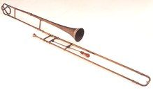
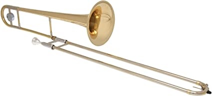

TROMBONE
Trombone, French trombone, German Posaune, brass wind musical instrument sounded by lip vibration against a cup mouthpiece. It has an extendable slide that can increase the length of the instrument’s tubing. The slide thus performs the function of the valves on other brass instruments. The trombone is said to have been created in the middle of the 15th century. Until the 18th century the trombone was called a "saqueboute" (in French) or a "sackbut" (in English).
The trombone is the only instrument in the brass family that uses a slide instead of valves to change pitch. A standard trombone is made of long thin brass pipes. Two U-shaped pipes are linked at opposite ends to form an "S." One pipe slides into the other so the total length of the pipe can be extended or shortened. You play the trombone by holding it horizontally, buzzing into the mouthpiece, and using your right hand to change pitch by pushing or pulling the slide to one of seven different positions. If you stretch the trombone out straight, it is about 9 feet long.
Today the trombone is also known for one of its most distinctive capabilities: the ability to slide between notes or glissando.Trombones come in three main sizes: alto, tenor and bass. The tenor is the standard instrument and features in most brass sections. Bass is also often added when low notes are required. The alto is relatively rare and is pitched a fourth higher than the tenor. All three instruments have a cylindrical bore and a slide for selecting pitches.